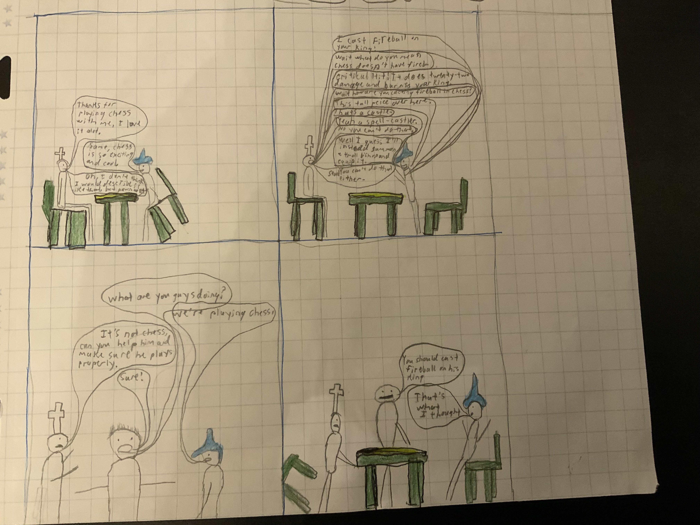
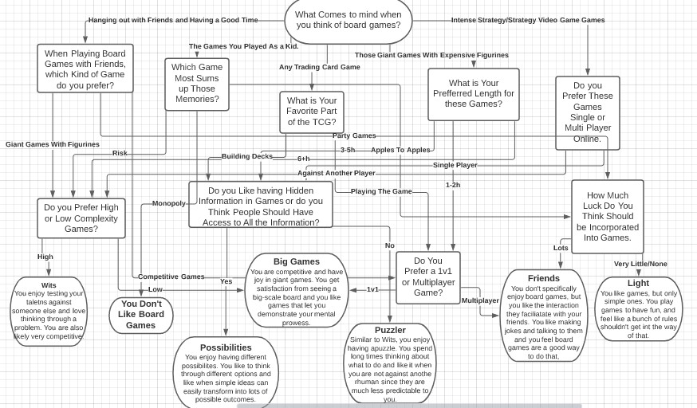

Welcome!!!
To The Reader,
The MGRP, or Multi-Genre Research Project, is a compilation of many different pieces, each a different genre, about a single topic. The point is to be able to do what we want while we sum up all we have learned in the year. In addition, the project would help us learn about different genres and improve our writing skills. It was my favorite unit this year because we got a lot of creative liberties and choices, and being able to write about what I want was very fun. Because many of our previous projects were about social issues and heavy topics, I decided for my MGRP topic to be incredibly light this unit. My topic is Board Games and all the excitement they can have. My idea being that many people think of Monopoly or chutes and ladders when they think of board games but they really have so much to offer. I had other ideas, but when I realized that I could write continuously about this one the most, I realized that it was probably the best option since it is a topic I am very passionate about.
Selecting what genres to write was one of the biggest parts of this project. I wanted to do multiple genres that were all different from each other, so I could learn more about myself and what I like to create. I did some superficial research on many of the genres that seemed interesting to me before starting each group. From that I made some decisions on the genres that looked fun to produce, and would do a little more research on them. After this, an important step I did before committing to the genre is to try and visualize what the piece will look like and what I wanted it to convey. If I couldn’t think of anything, I would move on to a different genre.
After I chose a genre, I did research on it, mainly by looking at examples of the genre, and sometimes looking at other sources about making them. Then I just worked on it and made sure I hit all the points I was thinking about when I chose the genre. For the Audio/Miscellaneous group, I had to write a script before I recorded. The script writing is normally the biggest part of the piece and was the most iterated over since I feel it is the most important part to those genres.
I hope you enjoy my MGRP website, and have as much fun reading through it as I did building it.
-Abhitej Kanuri
Written Peices
The written peices are part of the first group we did in class. They are all mediums that are expressed through writing and words. The three peices I chose for this group are an Exploratory Essay, a Reveiw, and a Listicle.
Everyone in the class did an Exploratory Essay as their first peice. It was meant to be an introduction into both the MGRP and our topics. I tried other topic ideas at first, such as Finishing work Quicker and the symbolisms found in chess, but I relaized that I couldn't even write a single paragraph on each of those topics. The exploratory essay is a much less rigid form of essay. Due to this, my tactic to writing one was to make a list of all the points I wanted to cover, then started writing and tried to hit each point.
The second peice I did for this group is the listicle. This was for my Ex-peer-tise section. The premise of that project was that each class member would research a genre and then give a presentation on it to give other classmatea ideas for the peices they choose to do. In addition, with the research we would be able to write our own peice of the genre. I, for the topic, was originally going to do my favorite board games, but that felt too cliche. So I decided to go with a theme for making board games with the listicle.
The final peice in the Written group is a reveiw. This one was relatively simple, and quite intuitive based on my topic. I chose one of my favorite board games, Shadowrift, and wrote down all of my ideas about it.
Visual Peices
The visual peices are the second genre we did. They are mainly peices of art or a chart tha can not be expressed through just writing. The three peices I did for this group are a Photo Essay, a Dichtonomous Diagram, and a Comic Strip.
The photo essay is a very simple peice, it tries to encapsulate people in all that board gaming has to offer, and has a humorous quote in the center.
The second peice, the Dichtonomous Diagram, is like a personality quiz. It was made with Lucid Chart and was a very complex peice to pull off, since I wanted it to be at least a little accurate. Traditionally, In a mind map, a diamond is a desision point, and the squares or circles an answer. But I though that would make the diagram much more confusing than it already is so I had the squared be the questions and the answers on the arrows.
The last peice is a comic strip, it is one of my favorite jokes but this peice was a little hard to put together since I knew nothing about drawing well or the art style of comics. I still don't know if I did the drawing right, but I feel like they get my point across.
Audio/Miscellaneous Peices
This is the last group of peices we did. Both of my peices in the Audio/Miscellaneous group are videos. The two peices are a commercial and a sales pitch.
The commercial was made in wevideo and was one of my favorite peices, it is a little untrue to the genre since it is long and trying to get the veiwer to immediately purchae it instead of increasing user affiliation over time, but, that means that is is actually more suited as a ad on a website or streaming service than on television.
The second peice is a sales pitch, more specifically, an elevator pitch, this was the funnest to put together and write the script for, since I made the tone much more humorous and got to try to try an argument about convincing someone to play board games.
Exploratory Essay
An exploratory essay is a form of essay which does not have as much structure as other essays. It goes through a variety of sections each trying to convey a point.
Many of us aspire to create something famous. To spread our wonderful ideas into the world. To join the legends of Monopoly, Scrabble, Ticket to Ride, and Risk. These games have cemented themselves as classics all across the spectrum of competitiveness. How have these games endured in our hearts so long? And how can you yourself make one just as great, or maybe better?
The Core Ideas
The first important thing to know when making your game is the core mechanic. This is something that makes your game stand out and will be the first thing you would teach to someone if they were learning how to play it. This could be placing tiles to complete words, or maneuvering your units to gain incremental advantage against your opponent’s forces. Your game will also have core ideas that all support this mechanic. These will be at the heart of the strategies and be important to how your game works. In scrabble it is the idea that longer words gives more points. This rewards knowledgeable players. In Risk it is attacking as many times as you want per round and the time limit. Those give incremental advantage to the person who has positioned their army better and also puts people on the offensive, respectively.
Tone
Another important thing to consider is the tone of your game. Most multiplayer games fall somewhere from competitive to family games. The more family focused games normally want everyone to have a good time, so they are filled with negative feedback loops that punish people who are winning and give losers a chance to catch up. Most also depend more on luck than on skill. Chutes and Ladders is an example of this, as it depends on dice rolls and a runaway winner could easily be knocked down by the large chutes at the top of the board. A competitive game will have elements that may snowball advantage but also ways for a skilled player to catch back up. They will offer multiple choices to use and be based more on skill than luck. Many may also have less of a goal for player interaction. Think about Ticket to Ride. That game has almost no luck because if you get cards from the market that you don't need you can always build on different routes, and you always can get the face up cards, as well as the wild cards not being quite powerful. During your turn, you also always have the option of storing cards for a giant track, or efficiently playing small tracks. And the more tracks you get the easier it is for you to complete your routes, but any player can still easily block you.
Rules
Now that you have your mechanics and tone, you want to flesh out some of your rules. These don’t necessarily have to support your main ideas, but they should be created with the tone and mechanics in mind. In ticket to ride this might be the specific ways you get cards and how wildcards work. In risk it would be how the combat system and movement works. After you think of some rules you want to flesh out some of the specifics of your game (the map, the different cards). These specifics might influence or be influenced by your rules.Lastly, you might need to fill in any blank spaces that may have been caused, such as situational rulings for a contradiction in the rules.
You’re Done!
And you’re done! You have now created your very own board game. This was just a simple analysis though, learning the best methods and ideas takes experience and practice, but maybe someday, you will be able to make the next Classic.
Writing the exploratory essay was tricky, because I normally like to use some structure when I’m writing to prevent me from going off into a tangent. But, I did do an essay before on board game mechanics in 4rth grade, and so this time I decided to do my essay from what I picked up on making a board game. I chose this topic because after playing my board games lots of times and listening to others, I was able to really realize the different parts each game had. I also kind of wrote this for myself because I have a plan to make a strategy video game and I wanted to plan it out. Originally my topic was responsibilities, but I changed that because after I wrote a bit of the exploratory essay, because I realized I wasn’t passionate enough about the topic to do multiple works on it. Overall, I think I like how it turned out, but I feel like I may have been too complex and I may hae repeated myself a bit.
Reveiw
A Reveiw is a peice written by someone epressing their thoughts, good or bad, about something. It is notmally meant to inform readers on whether the thing is worth their time or money. This is a reveiw on the board game Shadowrift and my thoughts on it.
I have lots of different board games, and when I was reading through reviews, I decided that for my third piece I would want to write a review on one of my board games. I originally wanted to do my favorite deck builder Arctic Scavengers, but after I began to write in it, I realized I didn’t have much to say. I find the game good, but I didn’t have any real criticism of it, and I also feel like the game lacked the real depth on multiple angles for me to write a full-length review about. I decided to write it on Shadowrift because I love the game and feel it needs more attention. To do my research, I looked at four different reviews, two of movies and two of games, to find out their similarities. I then mapped out where I would put these key features and what information I wanted to give in each section. From what I realized in reviews, it tends to be more exciting to focus around the negative aspects of the media than the positive. I realized that giving criticism is interesting so I tried to at first talk about the strengths of the game as a counter argument then talk about all the problems I faced. I based all the information off of the 15 or so games I played of it, because I feel as though that is enough experience. A big challenge I had was not going off on a tangent and not repeating things too much. I have very strong opinions about the game and I wanted to make sure the review wasn’t boring to read.
Listicle
A listicle is an article in list format. It gives multiple items each connecting to a theme with pictures and a description of each one.
When I first did the Listicle, I wanted to do my favorite board games, but I thought that wouldn’t fit well in the listicle format because I don't know many games and I also felt it was too basic. I decided I did know different successful board games and the mechanics they use, so I went with the best board game mechanics. I quickly jotted down a list of different ones I knew about, then went to Board Game Geek to find some others. I tried to get a round number and was able to get 10 mechanics I thought were very popular that I know I can talk about. I then took a picture for each of the mechanics using the board games I have, but I had to get creative with portraying drafting and gambling. I then needed to format everything so it is easy to scroll through and decided to not use a navigation section and also have each mechanic on a separate page. I also wanted to include examples so for each caption I showed how the game in the picture uses the element. I also realized I had a lot to say for many mechanics, but some people would want to skim through it and others just learn what the mechanics are. So for the first paragraph of each description I stuck to only explaining the core mechanics, while the second paragraph would delve into its strategy and ways to twist it around.
- Other Listicles I Looked At:
- Best Foreign Foods
- Top 100 Video Games
Comic Strip
A comic strip is a small amount of drawn frames that tell a message or make a joke. They are usually hand-drawn.

Transcript For If My Handwriting Awakens An Existential Dread Within You:
Thanks For Playing Chess with me, I love it a lot.
Same, chess is so exciting and cool.
Oh, I don’t think I would describe it like that, but pawn to E4.
I cast Fireball on you king!
Wait what do you mean chess doesn’t have fireba-
Critical Hit! It does twenty-two damage and burns your king!
How are you casting fireball in chess?
This tall piece over here.
That’s a castle.
Yeah it's a spell-castler.
No you can’t do that!
Well I guess I’ll instead summon a troll and equip it
Stop! You can’t do that either-
What Are You Guys Doing?
We’re Playing Chess
It’s not really chess. Can you help him and make sure he understands the rules?
Sure.
You should cast fireball on his king.
That’s what I thought!
*Flips Table*
After looking through and dissecting a few comic stips, I knew what I needed and what to add. The inspiration for the joke came from a small skit me and my friends performed while camping. I decided that my comic strip would be one of the more dialogue focused ones since the medium of the joke supports that. I kept the tables and chair consistent except for the third panel and tried to change the characters mouths to reflect their emotions. In the third scene, I zoomed in the perspective so that the table and chair were not visible to try and surprise the audience with the chair falling over.
To make the piece, I first made a plan of the storyline of my strip. I first decided I would have three panels, the set-up, a joke, a new element, then the punch-line. I came up with the dialogue first for each one, then I drew it in with pencil and colored in the furniture. I decided to differentiate each person by their head to add continuity, and when I was done coloring, I traced the lines with pen so they were easier to see.
Photo Essay
A photo essay is a collection of pictures that are all related and give a message. Normally there is a quote to show the message the photos are showing.
As someone who really likes the strategy and complexity many board games offer, it hurts my very being when people judge the hobby on the games for small children that they might have played. I wanted to showcase the amazing possibilities of boardgaming and really wanted to trash talk Monopoly. I originally was going to take pictures of all the games I had, but they each take a long time to set up and so I decided it would be better to get better scenes of a different variety of games off the internet. I did some research on different games and the best ones as well as ones on varying scales of difficulty and complexity, then I layered them to take up the whole space but also each be showcased. I like how it turned out, and although it is a little hard to read the message, I think it gets my point across.
The piece is supposed to be more light-hearted, but I also wanted to underneath show the theme of differences. Every person in this world is different, like games, but each one has its own unique quality. The pictures depict so many different types of games, but they are each special and each good in their own way.
- Picture Sources
- https://www.thespruce.com/catan-review-4773915
- https://www.fantasyflightgames.com/en/news/2013/8/13/conquer-the-old-world/
- https://boardgamegeek.com/blogpost/76460/gaming-bits-eminent-domain-oblivion-expansion-revi
- https://www.fredmeyer.com/p/mattel-blokus-game/0074677536384
- https://www.boardgamehalv.com/how-to-play-machi-koro/
- https://www.alwaysboardneverboring.com/2017/02/catacombs-first-edition.html
- https://www.shutupandsitdown.com/review-arctic-scavengers-recon/
Dichtonomous Diagram
A Dichtonomous Key is a diagram in which the user answers different questions in order to identify something. They have also integrated themselves into culture in the form of a personality quiz, which is the kind of diagram mine is.

Although dichotomous keys like this are normally regarded as a low-effort scam, I really wanted this to be accurate and to my best ability be able to represent people’s personalities. I started by brainstorming the different ways I could end by coming up with the main archetypes of board gaming. I then created some different questions to each capture a different aspect and sketched it out to make a map on how I wanted to do it. For each step I grouped together different items and then asked a question to separate them. I spent about one hour making the connections, and about three hours to fill in the questions and end categories.
Each of the questions was what I specifically thought would be toward each ending point. I came up with these questions by looking at different board games that share traits, and seeing what they have in common. I am very frustrated since the middle is very jumbled with many arrows and I couldn’t really find a good way to make it legible. This interpretation is not a traditional Dichotomous Diagram, since it is used as a more personality quiz-type. I came up with the topic since I wanted to stay true to the genre's main use of identifying a genus/group of something, so I did that for board gamers. My original idea was what mechanic to add to your board game, but I felt it wouldn’t work since that would be almost impossible to cover all the cases with all the paper in the world, and it felt authoritarian and restrictive. I was first exposed to this type of diagram in a ninjago book where at the end there was a small quiz that would ask a series of questions the lead your personality to one of the four main races of the show (I believe it was ninja, samurai, snake person, and Sensei).
Commercial
The point of a commercial is to increase the veiwers positive affiliation of an object so that after watching it about 15 times, the veiwer might want to buy it and think of the product more. My commercial is a little different and more made for the web, since it is long and the point is to instantly sell the idea.
I made this commercial with Wevideo to highlight the board game ShadowRift. I originally wanted to do something else since I also did my review on it, but I already had the game set up and I felt that it was a theme that would be easiest to sell. Epic heroes fighting monsters to save a town sounds much more epic and sellable than fighting your friends in a wasteland (arctic scavengers), or divvying up loot after a heist (H.M.S Dolores). As for research, we recently made a broadcast video in my elective, digital journalism, so I new how to use wevideo and important basics of broadcast video. I also watched a few video game commercials (the only ones I could find for board games were for kids games) and Game Makers Toolkit’s video on indie game commercials. I did something a little unconventional, and planned out all my pictures and everything before narration. This was because I wanted to make sure everything synced up to the different points of tension in the music I selected. I wrote a script like we did in our performance task for each section in my commercial. I then spent about half an hour getting the best pictures I could. Then I added everything to wevideo and then added narration, which took about three hours. I really like the final result, although it kind of feels like the beginning and end are two different commercials, I think I blended them well enough together.
My favorite part of working on this project was editing all the images and adding them to sync up with the song, this was one of the funnest pieces to make so far.
- Commercials I Looked at to Make This:
- Slay The Spire Commercial
- Hades Commercial
- Other Commercials I looked at
Sales Pitch
A sales pitch, or the specific genre I did, an elevator pitch, is meant to convince the prospect to dig deeper into the idea of your company. It is not by itself supposed to convince the prospect of your product, but instead give a general overveiw so that interested clients can meet up later to talk more specifically about the prduct. Due to this, elevator pitches leave out lots of information to convince the prospect in about an elevator ride. They should also be dynamic, so I made a fake personality and talked as though it were responding to my questions.
When looking through the possible projects for group three, I decided a sales pitch was the best option. I liked the idea of pitching an item to a client, and it seemed similar to an opinion essay, but also different enough that I decided to try it. For the topic, I was originally going to do a game I had an idea for, but it is hard to market for something without pictures or data. I decided to do the topic of board gaming in general when I saw this other pitch for a lifestyle, I believe it was to switch to veganism. The point of a sales pitch meeting, or the specific type I did, an elevator pitch, is to in a short amount of time, how long it may take for an elevator ride, convince the client that they should either meet-up with you later or search up your company for more information. It is not meant to give them lots of information or to immediately convince them to buy your product.
There were three main parts to this project, I needed the script, the slide presentation I held in my tablet, and the recording of the video with the editing and music. I put the film and the music, as well as the elevator images, together in WeVideo. One problem is that my tablet isn’t in view the whole time, but it did not really mess up anything since what is on the top is essentially almost mirrored on the bottom. In case, this is a link to the presentation.